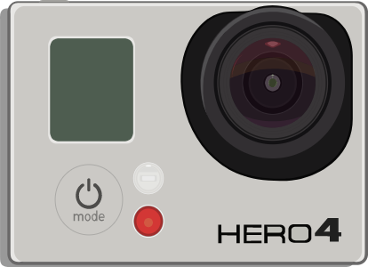

<!DOCTYPE html>
<html lang="en"></html>
<head>
  <meta charset="UTF-8"/>
  <meta name="viewport" content="width=device-width, initial-scale=1.0"/>
  <meta http-equiv="X-UA-Compatible" content="ie=edge"/>
  <title>Custom Tooltips on Images</title>
  <link rel="stylesheet" href="css/main.css"/>
</head>
<body>
  <header class="header">
    <div class="l-container">
      <h1>Custom Tooltips on Images</h1>
      <p>Use custom tooltips on images without adding more elements</p>
    </div>
  </header>
  <main class="l-container">
    <section>
      <p>I'm using <code>alt</code> attribute to show info in the tooltip. You can use whatever attribute you want.</p>
      <div class="container" id="container"></div>
    </section>
    <section class="doc">
      <h2>How to use</h2>
      <p>Copy this line before <b>&lt;/head&gt;</b>: </p>
      <p><code>&lt;link rel='stylesheet' href='https://cdn.rawgit.com/Arcandres/tooltips/master/css/tooltip.css'&gt;</code></p>
      <p>Copy this line before <b>&lt;/body&gt;</b>: </p>
      <p><code>&lt;script src='view-source:https://arcandres.github.io/tooltips/js/j.js'&gt;</code></p>
      <p>Now, just call the function with two parameters: <code>element, attribute</code></p>
      <pre data-language="Js"><code class="hljs javascript">tooltip(<span class="hljs-string">'container'</span>,<span class="hljs-string">'alt'</span>);
</code></pre></code></pre>
      <p><b>Element</b> means the images container (use ID), and <b>Attribute</b>, the content to show in the <b>Tooltip</b></p>
      <h2>Centering images</h2>
      <div class="container" id="container2">
        <style>
          #container2 .t-c {
            display: block;
            position: relative;
            text-align: center;
          }
          #container2 .t-c img {
            width:50%;
          }
        </style>
      </div>
      <p>If you like to center images as I do, edit <code>tooltip.scss</code> and change this:</p>
      <pre data-language="CSS"><code class="hljs css"><span class="hljs-selector-class">.t-c</span> {
  <span class="hljs-attribute">display</span>: inline-block;
  <span class="hljs-attribute">position</span>: relative;</code></pre>
      <p>by this:</p>
      <pre data-language="CSS"><code class="hljs css"><span class="hljs-selector-class">.t-c</span> {
  <span class="hljs-attribute">display</span>: block;
  <span class="hljs-attribute">position</span>: relative;
  <span class="hljs-attribute">text-align</span>: center;
</code></pre>
    </section>
  </main>
  <script src="js/j.js"></script>
  <script>
    tooltip('container', 'alt');
    tooltip('container2', 'alt');
  </script>
</body>